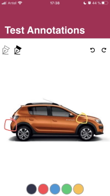

Image Annotations
Draws traces on images. PropertiesMethodsGetAnnotatedImageIt stores the modified image along with the annotations. &ResultImage = &AnnotationImage.GetAnnotadeImage() GetAnnotationsIt stores only the annotations made on an image. &AnnotationsImage = &AnnotationImage.GetAnnotations() UndoIt undoes the last trace made. The trace is taken from the moment you press on the device screen until you release it. &AnnotationImage.Undo() RedoIt redraws the last trace discarded by the previous Undo. &AnnotationImage.Redo() Note: In both cases, when a new trace is made, the trace history changes. SampleA car rental company uses an application for the rental process. When the car is delivered, it is checked by both the supervisor and the client, so that both of them try to find any scratches or dents before the client takes the car out on the street. That way the supervisor will record anything that might be found. This example will show the steps to follow to design a screen like the one shown below, using several of the methods provided by the control: 
Step 1: Step 2: Enter some images that will allow you to indicate the thickness of the trace, and to delete and recover the traces made. Schedule the following events for these images.
Event Start
&CarImage.FromImage("ExampleImageCar")
Endevent
// They configure the thickness (in dips) of the traces to be drawn on the background image.
Event ImageNarrowLine.Tap
&CarImage.TraceThickness = 1
Endevent
Event ImageWideLine.Tap
&CarImage.TraceThickness = 3
Endevent
// It undoes the last trace drawn by the user.
Event ImageUndo.Tap
&CarImage.Undo()
Endevent
// It redraws the last trace discarded by the previous Undo.
Event ImageRedo.Tap
&CarImage.Redo()
Endevent
Step 3: Lastly, add some images with the colors available for the trace. Program the Tap events for each of the colors. This way you can change the color of the trace at runtime.
// They configure the different colors for the traces. Event ImageBlack.Tap &CarImage.TraceColor = rgb(0,0,0) Endevent Event ImageRed.Tap &CarImage.TraceColor = rgb(249,104,104) Endevent Event ImageBlue.Tap &CarImage.TraceColor = rgb(94,169,231) Endevent Event ImageGreen.Tap &CarImage.TraceColor = rgb(164,220,141) Endevent Event ImageMustard.Tap &CarImage.TraceColor = rgb(255,217,87) Endevent
The application will then be programmed to meet the proposed scenario:
ScopeGenerators: iOS, Android. AvailabilityThis external is available only for iOS as of GeneXus 16 upgrade 9. This external is available for Android as of GeneXus 16 upgrade 10. See also
|

| Backlinks | |
| Multi-experience with GeneXus 17 | |
| Trace Color property | Trace Thickness property |